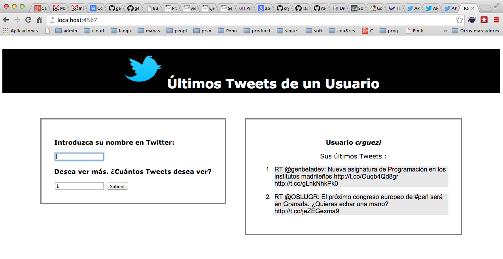

Siguiente: Práctica: TicTacToe Subir: Fundamentos Anterior: Sinatra como Middleware Índice General Índice de Materias
rack-last-twits (rama sinatra) en
https://github.com/crguezl/rack-last-twits/tree/sinatra
como base para su código.

La siguiente sesión pry muestra como obtener los seguidores de un usuario:
[1] pry(main)> require 'twitter'
=> true
[2] pry(main)> require './configure'
=> true
[3] pry(main)> client = my_twitter_client()
=> #<Twitter::REST::Client:0x007fe972075e78
@access_token="**********************",
@access_token_secret="**********************",
@consumer_key="**********************",
@consumer_secret="**********************">
[5] pry(main)> seguidores = client.friend_ids("crguezl").attrs[:ids].take(10)
=> [476049040, 249595722,
582620116, 546228347, 39973845,
150456846, 79024273, 2693104332,
2471387516, 1635283039]
[6] pry(main)> amigos = {}
[7] pry(main)> seguidores.map { amigos[client.user(f).name] = client.user(f).followers_count }
=> [269, 269, 269, 269, 269, 269, 269, 269, 269, 269]
[8] pry(main)> amigos
=> {"@laculturaensc"=>486, "Teatro Guimerá"=>2738,
"TEA Tenerife"=>5649, "Tenerife Ocio"=>12925,
"lagenda tenerife"=>7876, "El Chikiplan"=>424,
"PateaTusMontes"=>6038, "Mastering Vim"=>1170,
"CocoaConf Podcast"=>94, "Kido Tsubomi"=>269}
[9] pry(main)> amigos.sort_by { |x, y| -y }
=> [["Tenerife Ocio", 12925],
["lagenda tenerife", 7876], ["PateaTusMontes", 6038],
["TEA Tenerife", 5649], ["Teatro Guimerá", 2738],
["Mastering Vim", 1170], ["@laculturaensc", 486],
["El Chikiplan", 424], ["Kido Tsubomi", 269],
["CocoaConf Podcast", 94]]